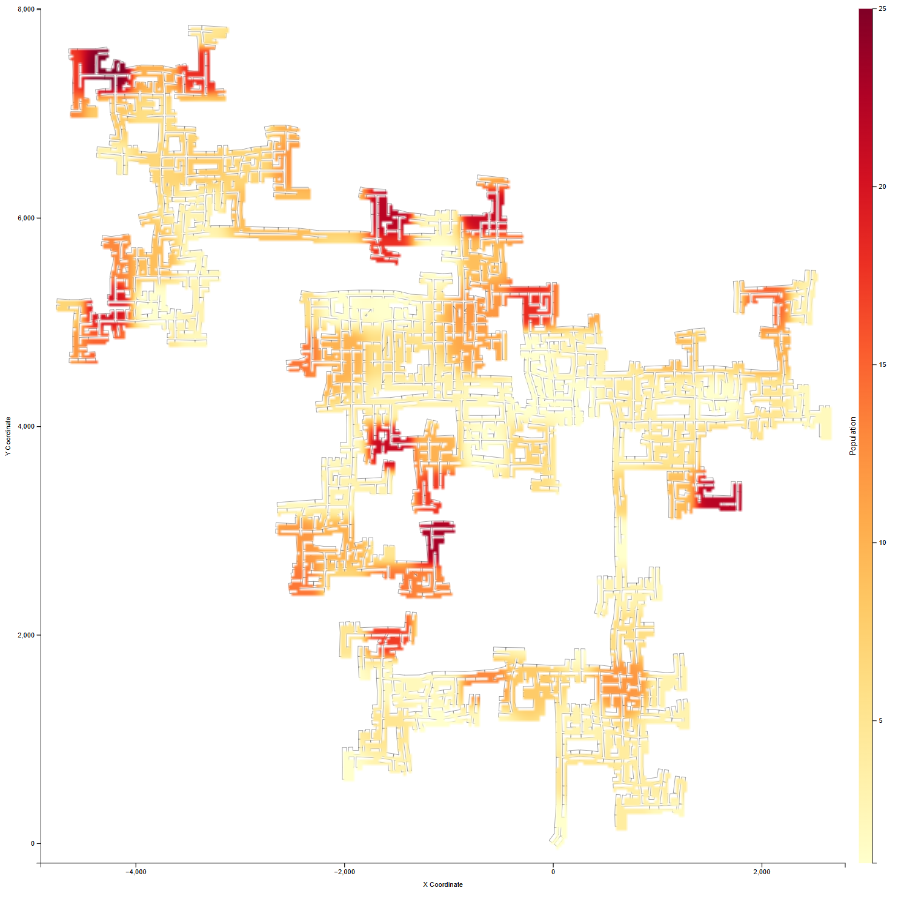
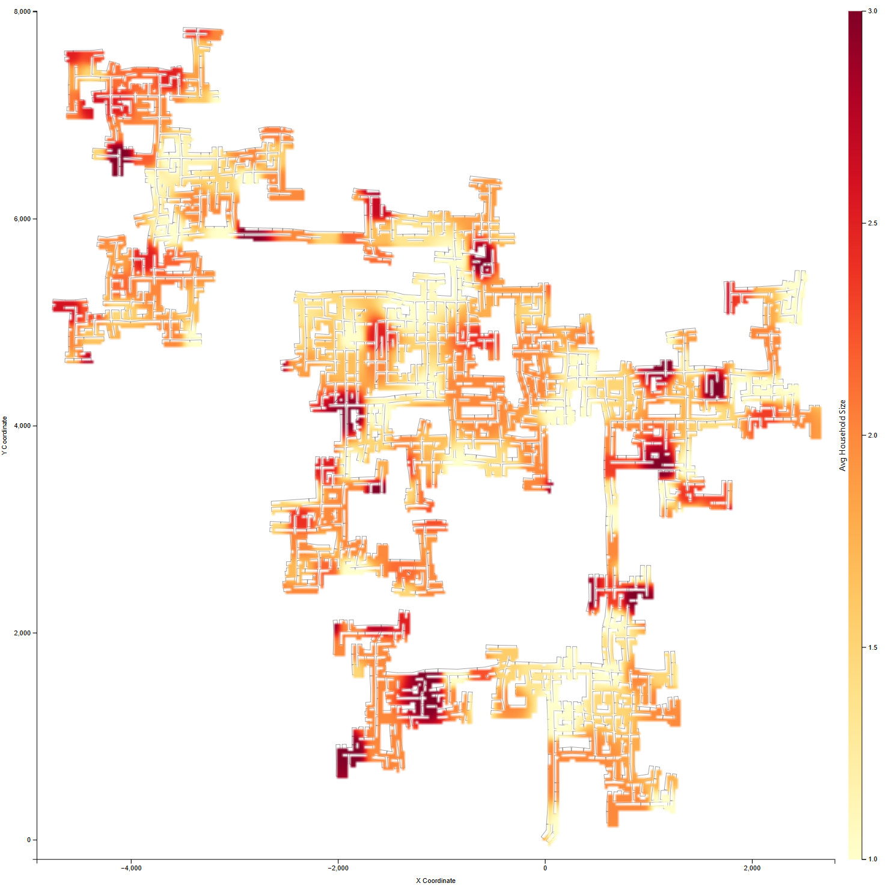
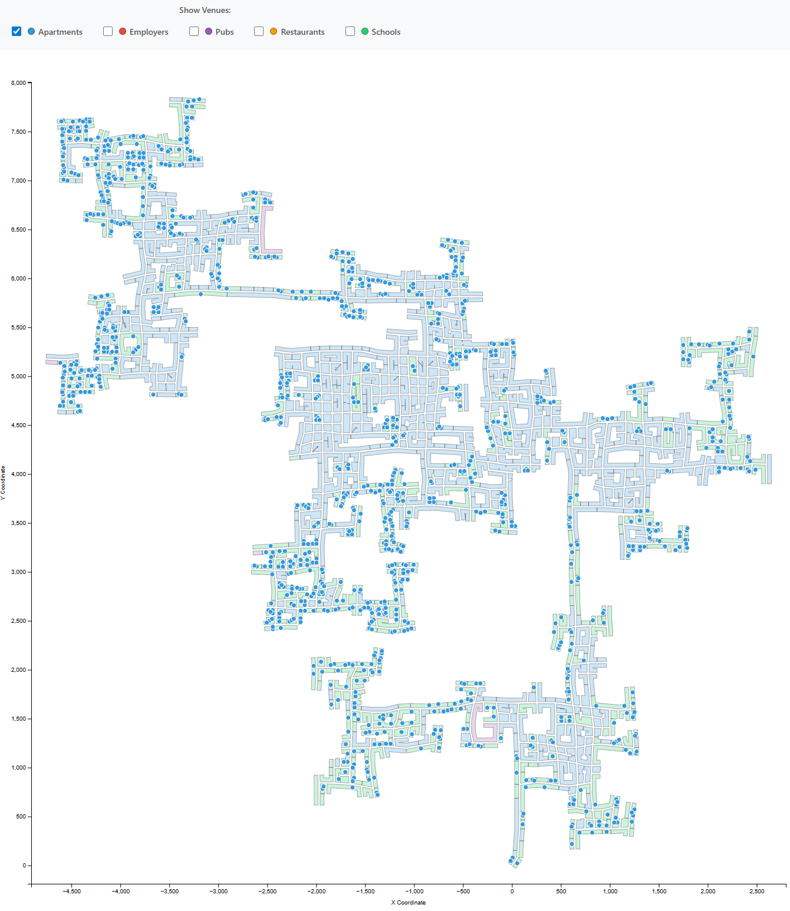

Fig.1: Population Density
Fig.1: Population Density

Fig.2: Average Household Size
Fig.2: Average Household Size

Fig.3: Apartment Locations
Fig.3: Apartment Locations

Fig.4: % of Families with Children
Matteo Arrigo, University of Luxembourg, matteo.arrigo.001@student.uni.lu PRIMARY
Giuseppe Galardi, University of Luxembourg, giuseppe.galardi.001@student.uni.lu
Nicola Noventa, University of Luxembourg, nicola.noventa.001@student.uni.lu
Student Team: YES
1. React (frontend)
2. D3.js (frontend)
3. Flask (backend)
4. Postgresql (database)
5. Docker
Approximately how many hours were spent working on this submission in total?
TODO: Provide an estimate of the total number of hours worked on this submission by your entire team.
Video
TODO: Provide a link to your video. Example:
http://www.youtube.com/ul-smith-mc1-video.avi
Questions
1 - Assuming the volunteers are representative of the city's population, characterize the distinct areas of the city that you identify. For each area you identify, provide your rationale and supporting data. Limit your response to 10 images and 500 words.
Urban Density and Residential Typologies
The analysis of population distribution reveals distinct urban patterns in Engagement. The population density heatmap (Fig.1) shows clear high-density clusters concentrated in specific regions throughout the city, characterized by darker red colors indicating populations exceeding 30 participants per grid cell.
Comparing Fig.1 with Fig.3, there is a clear correlation between high population density areas and apartment building concentration. The dense residential hubs visible in the population heatmap correspond precisely to clusters of apartment buildings. These areas represent typical urban apartment neighborhoods where vertical housing enables high population concentrations.
Distinct residential zones emerge from the data. High-density apartment neighborhoods with predominantly smaller households contrast sharply with peripheral residential areas characterized by larger average household sizes (2.5-3.0 people, shown in Fig.2). These suburban-style neighborhoods show lower population density despite being residential because families occupy larger homes with more square footage per person.
Family-Oriented Neighborhoods
A strong correlation exists between household size and families with children (Fig.2 and Fig.4). The spatial distribution patterns are remarkably similar, with high-value zones appearing in nearly identical locations. Areas with larger household sizes consistently correspond to zones where 80-100% of families have children, indicating strong family-oriented neighborhoods in the southern and eastern areas, as well as several smaller clusters. In these zones, the concentration of households with children suggests the presence of larger homes, good schools, and family-friendly amenities.
Conversely, the central high-density apartment areas show lighter colors in Fig.4—smaller households where fewer than 40% of families have children—typical of young professionals, couples without children, or retirees in urban cores.
Employment and Commercial Districts
The employment distribution (Fig.5) reveals a distinct separation between residential and commercial zones. Employers are concentrated in specific corridors and clusters that largely avoid the densest residential areas. The most prominent employment zones include a central business district and several smaller commercial hubs distributed throughout the urban area.
The employer density heatmap (Fig.6) quantifies this concentration with the darkest areas showing 6-8 employers per grid cell. These high-concentration zones form a clear commercial corridor through the city center and several secondary commercial nodes. The spatial separation between residential apartments and employment centers indicates a typical urban structure where people commute from residential neighborhoods to distinct work districts, creating predictable traffic patterns during peak hours.
Economic Patterns
The income distribution heatmap (Fig.7) reveals remarkable economic homogeneity. The city exhibits no significant high-income or low-income districts, with predominantly light yellow tones across almost the entire urban area indicating average income levels between $50,000-100,000. Only a few isolated cells show slightly elevated income levels, representing scattered anomalies rather than cohesive affluent districts.
2 - Where are the busiest areas in Engagement? Are there traffic bottlenecks that should be addressed? Explain your rationale. Limit your response to 10 images and 500 words.
Temporal Traffic Patterns
Fig.8 shows the aggregate number of visits per hour, normalized with respect to the daily average. Higher bars indicate periods of increased engagement activity. The hourly activity distribution reveals clear peak traffic periods during the day. The highest volumes occur between 7-8 AM and 4-5 PM, when activity exceeds 180% of the daily average. These peaks are consistent with standard commuting behavior, reflecting morning trips to work and evening returns home. A secondary peak is visible around 12-1 PM, likely associated with lunch-time movements toward restaurants and cafes. Overall, the temporal profile aligns with typical urban work schedules and daily routines.
Spatial Distribution: Time-of-Day Analysis
The traffic heatmaps in Figs.9-12 visualize visit counts to venues at different times of day. Each circle represents a venue location, with both its size and color encoding the number of visits recorded during the selected time window. Larger and darker circles indicate higher visit counts, while smaller and lighter circles correspond to lower engagement.
Across time periods, traffic intensity varies substantially, but several spatial hotspots remain consistent. Morning traffic exhibits the highest overall volume, as expected from commuting flows. Evening traffic is slightly lower, while nighttime activity unexpectedly exceeds evening levels, indicating strong late-night movement patterns. Persistently large and dark circles identify venues that attract sustained engagement throughout the day.
These recurring hotspots correspond primarily to hospitality venues, including pubs and restaurants distributed across the city. Their consistent prominence suggests that such venues act as major traffic attractors throughout the day, not only during traditional commuting peaks.

Fig.13 provides spatial context for interpreting the recurring hotspots observed in the traffic plots. In particular, two pubs located in the center-east area appear as persistent high-traffic nodes across multiple time windows, alongside additional restaurant and pub sites scattered throughout the city.
Weekday vs. Weekend Patterns
Figs.14 and 15 use the same visual encoding as the previous traffic plots, enabling direct comparison between weekday and weekend patterns. On weekends, traffic concentrates more strongly around restaurants and pubs, with entertainment venues becoming the dominant traffic generators. This contrasts with weekdays, where traffic is more evenly distributed and reflects commuting and routine errands. The weekend clustering around hospitality venues reinforces their role as primary leisure destinations.
Flow Density Analysis: Critical Bottlenecks
The flow density maps in Figs.16-20 visualize the spatial concentration of travel movements. Each line represents an observed trip between locations, while areas with higher line density indicate zones that are repeatedly traversed by many participants and therefore potential traffic bottlenecks.
During weekday mornings (Fig.16), flows are widely dispersed across the city, with no dominant origin or destination. This pattern is consistent with distributed commuting behavior toward multiple employment locations. Weekend mornings (Fig.17) show a mild increase in concentration, but still lack clearly defined focal points.
A clear change emerges during weekend afternoons (Fig.18). Dense clusters of overlapping flows appear around restaurant and pub locations, particularly in the central area, indicating strong convergence toward a limited set of entertainment venues. These high-density regions represent clear bottlenecks where multiple travel paths intersect.
The all-days 1 PM flow density map (Fig.19) reinforces this observation. Even when aggregating both weekdays and weekends, restaurant and pub locations remain among the most densely traversed areas. This indicates that hospitality venues consistently act as major attractors during lunch hours, creating recurrent pressure points in the road network independent of the day type.
During weekend nights (Fig.20), flow patterns reverse direction. Dense trajectories radiate outward from the same hospitality clusters toward residential areas, reflecting participants returning home. This repeated cycle of convergence in the afternoon and dispersal at night amplifies congestion around
Recommendations
The identified bottlenecks, especially the central and center-east pub clusters highlighted by Figs.13 and 18, should be prioritized for infrastructure and mobility interventions. Potential measures include targeted traffic management during peak weekend windows, improved public transport connectivity, enhanced pedestrian infrastructure, and additional drop-off or parking capacity. Given the strong temporal concentration of congestion, time-based strategies are likely to be particularly effective.
3 - Participants have given permission to have their daily routines captured. Choose two different participants with different routines and describe their daily patterns, with supporting evidence. Limit your response to 10 images and 500 words.
We selected Participant 1 (Age 5, HighSchoolOrCollege) and Participant 609 (Age 42, Bachelors) to compare two distinctly different daily routines.
Time Allocation Analysis (Parallel Coordinates)
The parallel coordinates chart (Fig. 8) highlights clear differences in the number of recorded activities between the two participants. Participant 609 (green) shows a higher number of work activities, which include workplace visits and commuting trips, indicating a routine strongly centered on professional obligations. Participant 1 (red) presents fewer work activities, consistent with a shorter and more flexible study routine.
A strong contrast appears in social activities. Participant 1 records a much higher number of social and recreational events, showing frequent leisure outings and a socially active lifestyle. Participant 609, in contrast, exhibits very limited social activity, suggesting that leisure plays a minor role in daily life.
Participant 1 also shows more home activities, indicating frequent presence in the home environment, while Participant 609 records fewer home events. Food activities are more frequent for Participant 609, likely related to regular restaurant visits during the workday. Travel activity is observed for both participants, but Participant 1 moves for a wider range of purposes, whereas Participant 609 travels mainly for work related reasons.
Weekday Patterns
Participant 1 follows a shorter and more flexible routine, working or studying from 08:00 to 16:00, after which the day opens up to a variety of activities; the evening shows frequent social and recreational outings, and the travel patterns are diverse, connecting home, work/study, and multiple leisure locations, indicating a dynamic and socially active lifestyle. Participant 609, instead, has a longer and more structured workday from 08:00 to 18:00, with a clear lunch break, and spends most of the evening at home; their mobility is mainly limited to a repetitive home-work-home route, reflecting a stable, work-centered, and less varied daily routine.
Weekend Patterns
During the weekend, Participant 1 shows a highly flexible and leisure-oriented routine, spending most of the day alternating between home, recreation, and restaurants with frequent short trips to multiple venues, indicating a socially active and exploratory use of time, whereas Participant 609 maintains a calmer and more home-centered pattern, with longer stays at home, limited outings mainly for meals or short recreational activities, and localized, repetitive travel routes around the residential area, reflecting a relaxed but still structured weekend lifestyle.
Summary
Overall, the comparison highlights two distinct mobility and lifestyle patterns. Participant 1 shows higher daily mobility, characterized by frequent and varied movements between home, work or study, and multiple leisure venues, resulting in a dense and ramified set of travel routes. Despite shorter work hours, this participant is more spatially active and socially engaged. In contrast, Participant 609 follows a longer and more structured workday, with mobility largely concentrated along a limited number of repetitive routes, mainly between home and work. The overall routine is more stable and less diverse.

4 - Over the span of the dataset, how do patterns change in the city change? Describe up to 10 significant changes, with supporting evidence.
Global Activity Volume: Stability After Early Outliers
Fig.21 shows the evolution of activity counts over time for Home, Work, Restaurant, and Pub. The dataset starts with unusually high values, particularly for Home and Pub, followed by a sharp decrease during the first months. This behavior is likely due to early outliers or an initial logging/coverage effect rather than a genuine behavioral shift. After this transient phase, the monthly averages remain largely stable throughout the observation period. A notable exception occurs in February 2023, where all activity categories experience a synchronized drop, indicating a city-wide disruption or data-collection anomaly rather than a sector-specific change.
Weekly Activity Structure: All Hours vs. Nighttime
Fig.22 aggregates all activities across all hours of the day. No strong weekly pattern emerges: activity levels are relatively homogeneous across weekdays and weekends, suggesting that total engagement alone masks temporal structure. In contrast, Fig.23 (nighttime only) reveals a clear and persistent pattern: activity intensifies during weekends. This indicates that leisure-related behavior is temporally structured and predominantly concentrated at night on weekends, while daytime activity smooths out these variations.
Work Activity as a Temporal Reference
Fig.24 highlights the temporal regularity of work-related activity. Engagement is consistently concentrated on weekdays, with visibly reduced intensity during weekends. This pattern remains stable throughout the entire dataset, providing a behavioral baseline against which other activities can be compared. The persistence of this structure suggests that the city’s employment routines are highly regular and resilient to seasonal variation.
Residential vs. Working Areas: Morning-Evening Contrast
Figs.25-26 show activity patterns within a predominantly working area. Morning activity is consistently high across weekdays, reflecting inbound commuting and daytime presence. In the evening, activity drops sharply, indicating that the area loses relevance after work hours and lacks strong residential or leisure anchoring.
Figs.27-28 illustrate the opposite behavior in a residential area. Morning activity is present but more distributed and less intense, consistent with residents leaving at different times. In the evening, activity becomes more uniform and sustained, reflecting return-to-home behavior and localized evening routines. The contrast between these four plots highlights a stable spatial-temporal segregation between work-dominated and residence-dominated zones.
City-Wide Change Point: February 2023
Across all visualizations, February 2023 emerges as a significant change point. The simultaneous reduction in work, home, restaurant, and pub activity suggests a global shift affecting the entire city rather than isolated districts or time windows. The rapid recovery in subsequent months reinforces the interpretation of a temporary disruption or coverage issue, rather than a long-term behavioral transformation.
Seasonal Distribution of Activities
Fig.29 summarizes the seasonal distribution of activities using a radar chart, comparing Spring, Summer, Fall, and Winter across the four main categories (Home, Work, Restaurants, Pubs). The overall radar shape is highly consistent across seasons, indicating strong stability in city-wide behavioral patterns. Home and Work dominate the activity profile in all seasons, confirming their role as structurally stable components of daily urban life.
Clear seasonal differences emerge for Pub activity. Values peak in Winter and Spring, while a noticeable decline is observed during Summer and Fall. This suggests that pub attendance is less frequent in warmer periods, possibly reflecting a shift toward alternative leisure activities or outdoor socialization not captured within the Pub category.
Home activity shows a slight increase in Winter, consistent with more time spent indoors, while Work activity remains nearly invariant throughout the year. Overall, the radar visualization indicates that seasonal effects primarily influence leisure-related behavior, while core routines such as Home and Work remain largely unchanged.